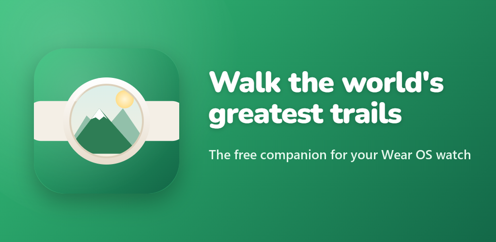

Beta access · Wear OS & SamsungYou're in. Let's get you walking.
Two quick steps and Watch Walks runs right on your wrist, turning your everyday steps into a journey down the Inca Trail — it's free. For Samsung Galaxy Watch, Pixel Watch, TicWatch, OnePlus Watch and more.
Join the testers group
Google Play only shows the app to testers, so joining the group is what unlocks the download. Tap below, then on the page that opens click the "Join group" button near the top to sign up. Use the same Google account that's on your watch and phone Play Store, and give it a few minutes to go live.
Join the testers groupInstall on your watch
Tap Become a tester, then open the Play Store on your watch, find Watch Walks and install it (start with the free Inca Trail). Open it once and just start walking — no phone pairing needed.
Become a tester & installGet the companion (optional)
The free phone app turns your steps into a living map, unlocks a story at every landmark, and gives you a badge for each trail you finish. Same beta access — once you're in the group you can install it too.
Companion on Google PlayWant every detail? See the full Wear OS & Samsung setup guide.
We'll get you walking.
- Google Play says it's not available or "not a tester" — give it a little longer after joining, and make sure your watch/phone Play Store uses the same Google account you joined with.
- I can't find it on my watch — make sure it installed (the watch needs Wi-Fi or Bluetooth), then open the Play Store on the watch and search Watch Walks.
- Still stuck? Email watchwalksupport@gmail.com and we'll sort it out.